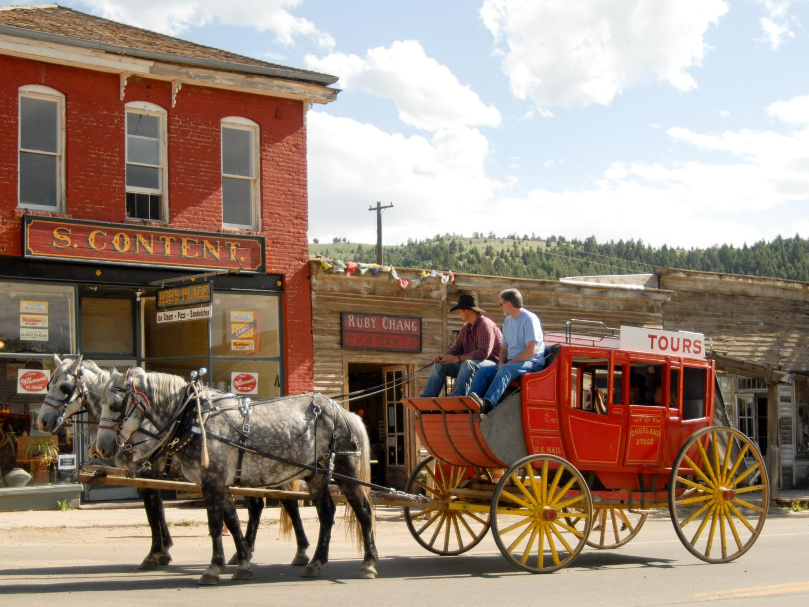

-
꼭 가봐야 할 곳
글레이셔 국립공원
몬태나 주의 대표적인 공원으로, 초원, 산맥, 고산 목초지, 붉은삼나무 숲, 호수 등
다양하고 역동적인 자연환경을 선사하는 고잉투더선로드(Going-to-the-Sun-
Road)를 따라 드라이브하며 만끽할 수 있습니다. 1,100km가 넘는 트레일을 따라
가다 보면 회색곰, 산양, 무스 등 야생동물을 마주칠 수 있는 공원의 중심지에 더욱
가까워집니다.
더 보기
-
꼭 가봐야 할 곳
몬태나 공룡 트레일
이 트레일을 따라 14개의 고생물학 박물관이 자리해 있는데, 그중에는 지금껏
발견된 티라노사우루스 두개골 중 가장 큰 두개골이 소장된 로키 산맥 박물관
(Museum of the Rockies)과 공룡 뼈를 직접 만져볼 수 있는 올드 트레일 박물관
(Old Trail Museum)이 있습니다. 투 메디슨 공룡 센터(Two Medicine Dinosaur
Center)에서는 실제 공룡 화석을 채굴해볼 수도 있습니다.
더 보기
-
꼭 가봐야 할 곳
퍼스트 피플스 버팔로
점프 주립공원
지난 수천 년간 아메리카 원주민들은 1.5km 길이로 미국에서 가장 큰 버팔로 지대
중 하나인 이 절벽에서 버팔로를 몰아왔습니다. 해설이 제공되는 트레일과 방문자
센터를 통해 이 오래된 관습을 생생히 체험해보세요.
더 보기
-
꼭 가봐야 할 곳
게이트 오브 더 마운틴스
미주리강을 따라 목선을 타고 떠났던 그 유명한 탐험 중, 탐험가 루이스(Lewis)와
클라크(Clark)는 옐로스톤 국립공원과 글레이셔 국립공원 사이 중간 지점에 위치한
이곳의 이름을 지었습니다. 이 역동적인 수로를 따라 보트 투어를 즐기며 주변 산의
아름다운 풍경도 감상해보세요.
더 보기
-
꼭 가봐야 할 곳
세계 광산 박물관
뷰트(Butte)에 위치한 이 박물관 주변은 인적이 다소 드물어 보일 수 있지만, 그 아래
에는 완전히 다른 세상이 펼쳐집니다. 지하 20m 아래로 내려가거나 탄갱 승강대를
타고 올라가고, 오펀 걸(Orphan Girl) 탄광에서 열리는 66개의 전시를 둘러보며
몬태나 주 광산의 역사를 직접 체험해보세요. 광물 및 암석실과 재현된 광산 마을을
통해 역사 깊은 몬태나의 산업 세계로 푹 빠지게 될 것입니다.
더 보기
-
꼭 가봐야 할 곳
플랫헤드호
몬태나 주 북서부 지역에 위치해 있으며 미국 서부에서 가장 큰 천연 호수인
플랫헤드(Flathead) 호는 송어 낚시나 보트를 즐기기에 제격인 잔잔한
담수호입니다. 75종의 조류가 서식 중인 와일드 호스 섬(Wild Horse Island)을
방문해 큰뿔양, 사슴, 매, 그리고 섬 이름과 같은 야생마를 직접 만나보세요. 또는
직접 체리를 수확할 수 있는 과수원도 호수 주변에서 찾아볼 수 있습니다.
더 보기
-
꼭 가봐야 할 곳
루이스 앤 클라크 캐번즈
주립공원
가이드 투어를 통해 종유석과 석순을 직접 볼 수 있는 석회암 동굴로 웨스턴
큰귀박쥐를 만나게 될 수도 있습니다. 동굴 투어를 마친 후 하이킹, 사이클링을
즐기거나 지상 자연 투어를 떠나보세요.
더 보기
-
꼭 가봐야 할 곳
리틀 빅혼 배틀필드
국립천연기념물
가이드 도보 투어를 통해 1876년 이곳에서 발발했던 미국 기병과 아메리카 원주민간
전투 당시의 발자취를 따라가보세요. 한 길을 따라 내려가는 셀프 가이드 투어를 통해
서도 커스터(Custer) 및 레노-벤틴(Reno-Benteen) 전투지를 모두 만나볼 수
있습니다. 방문자 센터에 들러 전투에 사용되었던 무기와 기념물을 둘러보고 커스터
국립묘지(Custer National Cemetery)에도 방문해보세요.
더 보기
-
꼭 가봐야 할 곳

버지니아시티 개척의
역사
앨더 협곡(Alder Gulch)에서 금이 발견된 1800년대 중후반 개척 시대로 돌아가
보세요. 몬태나주 남서부에 위치한 버지니아시티는 이 골드러시 시대에
형성되었으며, 방문객들이 서부 개척 시대를 체험해볼 수 있는 기회를 제공합니다.
사금을 채취하거나 옛날식 연극을 보고 역마차 타기, 유령 투어, 기차 타기나 소방차
투어를 즐겨보세요. 단 몇 분 거리에 있는 유령 마을인 네바다시티에도
꼭 들러보세요.
더 보기
-
꼭 가봐야 할 곳
빅스카이 리조트
빅 스카이 리조트에는 스키나 스노보드 등 즐길 거리가 무궁무진해서 마치 산을
독차지하는 듯한 느낌이 듭니다. 수직에 가까운 약 1,325m 코스, 34개의 의자식
리프트와 서피스 리프트, 고도 3,403m의 론 피크 케이블카(Lone Peak Tram)를
갖춘 23.6km² 규모의 스키장이 있는 이 리조트는 ‘미국 최대의 스키장’이라고
불립니다.
더 보기


 서부 개척 시대의 소울 푸드: 척왜건 저녁 식사
서부 개척 시대의 소울 푸드: 척왜건 저녁 식사
 유타주 솔트레이크시티 옐로스톤 국립공원의 대자연과 역사 탐방하기
유타주 솔트레이크시티 옐로스톤 국립공원의 대자연과 역사 탐방하기
 미줄라의 소규모
양조장 여행기
미줄라의 소규모
양조장 여행기
 옐로스톤 여행 : 미국서부 로드 트립 대장정을 장식할 아홉 개의 목적지
옐로스톤 여행 : 미국서부 로드 트립 대장정을 장식할 아홉 개의 목적지
 체험
프로가 알려주는 멋진 야생동물 촬영 비법
5가지
체험
프로가 알려주는 멋진 야생동물 촬영 비법
5가지
 목적지
글레이셔 국립공원만
목적지
글레이셔 국립공원만
 미국 여행 정보
미국 여행 정보